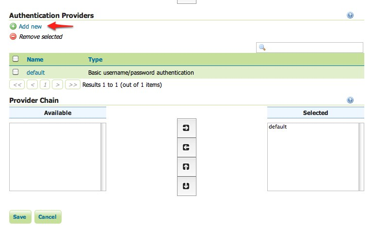
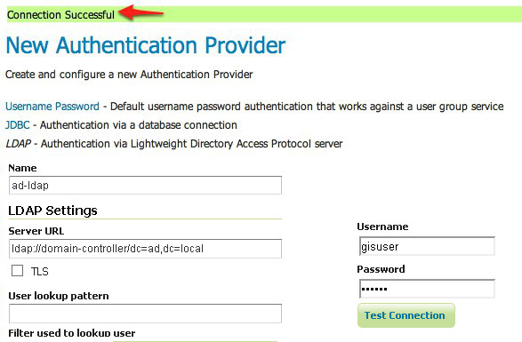
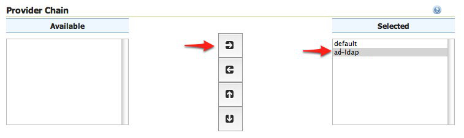

Authentication with LDAP against ActiveDirectory¶
이 예제에서 GeoServer LDAP가 어떻게 활성 디렉터리(ActiveDirectory)를 LDAP 서버로 이용해 윈도우 영역(Windows Domain)으로의 접근을 지원하는지 설명합니다. 이 예제를 진행하기 전에 LDAP authentication 섹션을 읽을 것을 권장합니다.
Windows Server and ActiveDirectory¶
활성 디렉터리는 또다른 LDAP 서버 실행 수단일 뿐이지만 GeoServer LDAP 인증 작업에 성공적으로 이용하려면 몇 가지 기능을 알아야 합니다. 이 예제에서 ad.local이라는 영역에 대해 domain-controller라는 활성 디렉터리를 갖춘 윈도우 서버 영역 컨트롤러(Windows Server Domain Controller)가 있다고 가정합니다. 사용자 환경이 다른 명칭을 쓰고 있을 경우 (분명히 그럴 테지만) 필요한 곳에 실제 명칭을 대입하십시오.
다음과 같이 가정합니다.
- GISADMINGROUP 이라는 그룹이 존재합니다.
- GISADMINGROUP 그룹에 속해 있으며 비밀번호가 secret인 GISADMIN이라는 사용자가 존재합니다.
- GISADMINGROUP 그룹에 속해 있지 않으며 비밀번호가 secret인 GISUSER이라는 사용자가 존재합니다.
주석
활성 디렉터리를 이용할 경우 일반적으로 관리자 그룹명을 “ADMINISTRATOR”라고 해선 안 됩니다. 윈도우 환경에서 “Administrator”가 마스터 사용자의 명칭이기 때문입니다.
Configure the LDAP authentication provider¶
GeoServer를 실행하고 admin 사용자로 웹 관리자 인터페이스에 로그인합니다.
사이드 메뉴의 Security 섹션 아래 있는 Authentication 링크를 클릭하십시오.

Authentication Providers 패널로 스크롤해서 Add new 링크를 클릭하십시오.
LDAP 링크를 클릭하십시오.

설정 서식의 항목에 다음과 같이 입력하십시오.
- Name에 “ad-ldap”를 입력합니다.
- Server URL에 “ldap://domain-controller/dc=ad,dc=local” 을 입력합니다.
- Filter used to lookup user에 “(userPrincipalName={0})”를 입력합니다.
- Format used for user login name에 “{0}@ad.local”을 입력합니다.
- Use LDAP groups for authorization을 체크합니다.
- Bind user before searching for groups를 체크합니다.
- Group to use as ADMIN에 “GISADMINGROUP”을 입력합니다.
- Group search base에 “cn=Users”를 입력합니다.
- Group search filter에 “member={0}”를 입력합니다.
오른쪽에 있는 연결 테스트 서식에 사용자명 “GISADMIN”, “secret”을 입력하고 Test Connection 버튼을 클릭해서 LDAP 연결을 검사합니다.
페이지 상단에 연결 성공 메시지가 표출되어야 합니다.
저장하십시오.
다시 Authentication 페이지로 돌아와 Provider Chain 패널로 스크롤한 다음, ad-ldap 제공자를 Available에서 Selected로 옮깁니다.
저장하십시오.
Test a LDAP login¶
GeoServer 홈페이지로 이동해서 admin 계정을 로그아웃합니다.
비밀번호 “secret”를 써서 “GISUSER” 사용자로 로그인하십시오.

“GISUSER” 계정에 관리자 롤이 매핑되지 않았기 때문에 로그인해도 관리자 기능을 이용할 수 없습니다. 다음 섹션에서 GeoServer가 LDAP 데이터베이스에서 나온 그룹에 롤을 매핑하도록 설정할 것입니다.
이제 관리자 권한을 갖춘 사용자로 로그인합니다.
- GeoServer 홈페이지로 이동해서 로그아웃합니다.
- 비밀번호 “secret”를 써서 “GISADMIN” 사용자로 로그인하십시오.
로그인에 성공하면 전체 관리자 기능을 이용할 수 있을 것입니다.